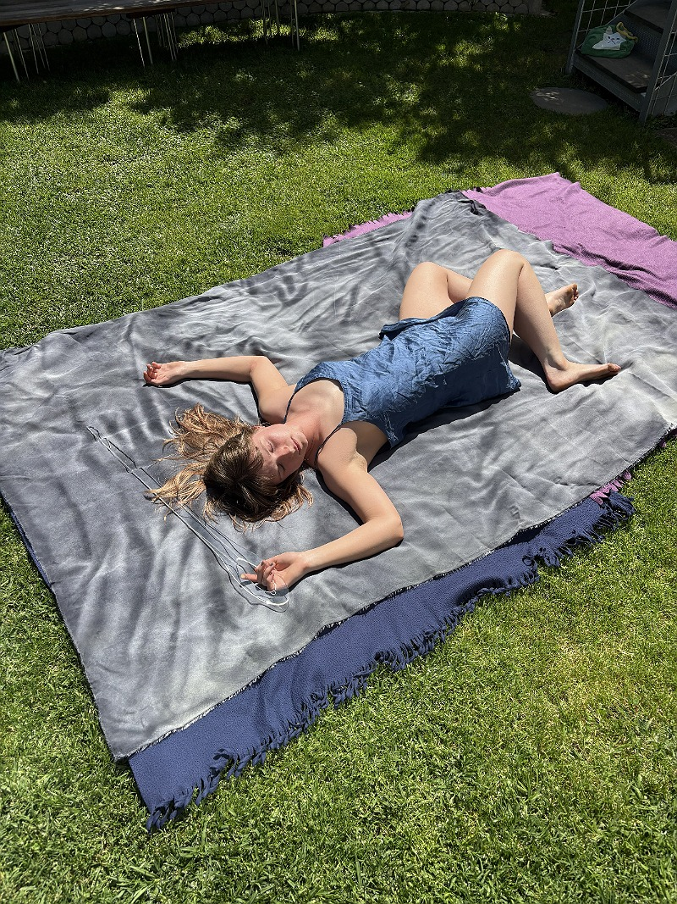
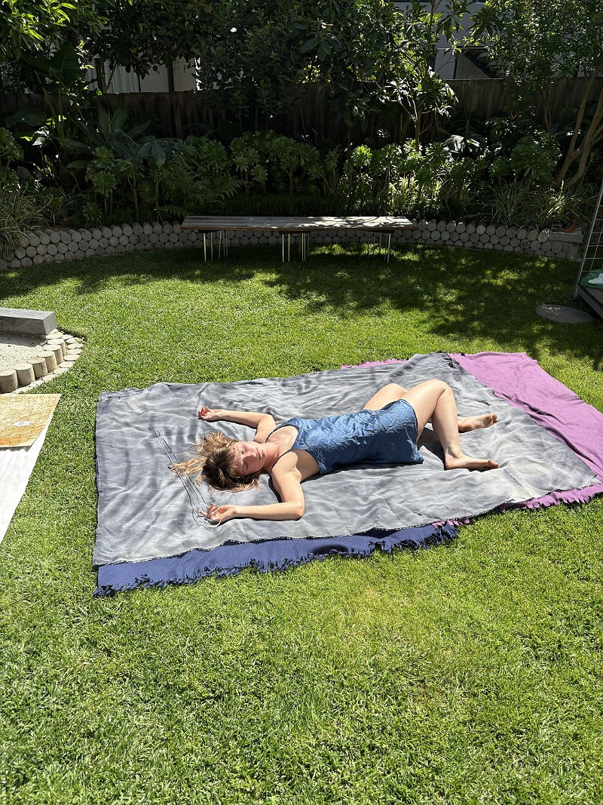
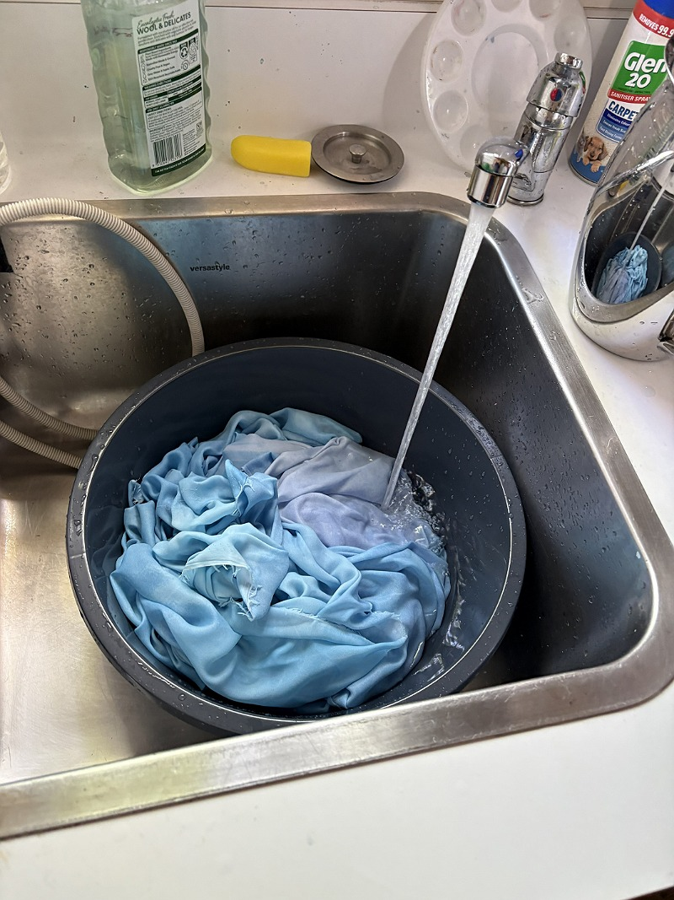
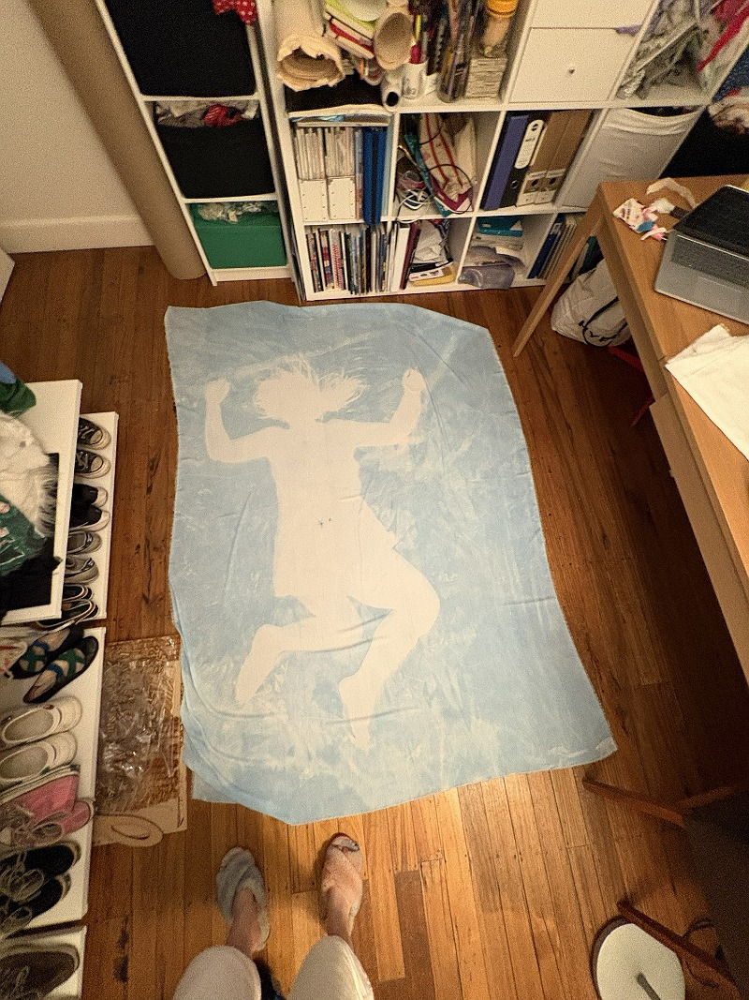

Again, for my cyanotype piece, I laid out some blankets to protect the fabric. Cyanotypes expose much more quickly than anthotypes, and so I had very little time to position myself on the fabric. I decided, before putting the fabric out, that I would lie with my legs bent and my arm held aloft, holding my needle. I decided to use the clear, acrylic needle for this, as I have printed with glass on cyanotypes before, and the reflecting light creates beautiful, unexpected effects on the dye. I put down the fabric, laid down, and asked my dad to take some photos of me, while the print exposed. I only laid out in the sun for around ten minutes, then took the fabric inside and ran it under clear water to halt the processing. I hung it out to drip dry in the shade, and now I had all of my fabric!




